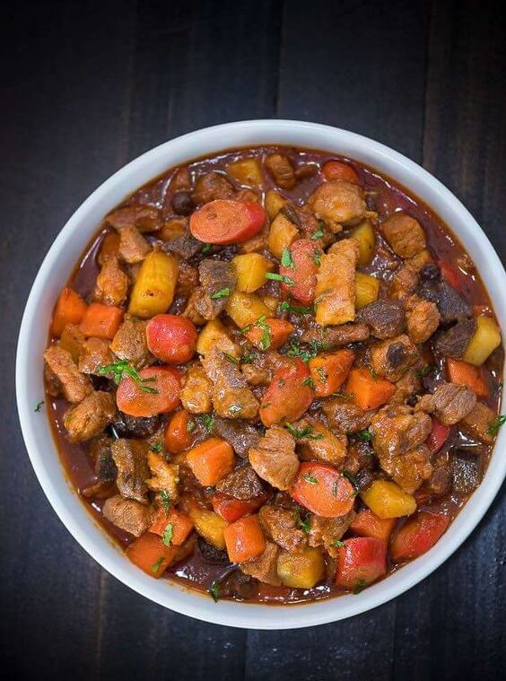

Sa malawak na palamuti ng mga lutuing Pinoy, ang Menudo ay isa sa mga nagpapakilala at nagpapayabong sa ating
mga panlasa. Ito ay isang pagkaing puno ng lasa at mayroong malalim na kahulugan na naglalarawan ng kultura at
kasaysayan ng mga Pilipino.
Ang salitang "Menudo" ay nagmula sa salitang Espanyol na nangangahulugang "maliit" o "maliliit na bagay." Ito
ay isang lutuing may sabaw na karaniwang ginagawa gamit ang karne ng baboy, tulad ng tiyan o kasim, na
hinahalo sa mga gulay tulad ng patatas, carrots, at bell peppers. Karaniwan ding kasama ang sibuyas, bawang,
at mga pampalasa tulad ng toyo, asin, at paminta. Ang Menudo ay niluluto sa kawali o kaldero hanggang sa
maluto at malabsorb ng mga sangkap ang sabaw.
Ang Menudo ay higit pa sa isang pagkaing pangkain; ito ay isang pagsasama-sama ng lasa at pagsasalin ng
tradisyon ng mga Pilipino. Ito ay isang halimbawa ng impluwensya ng mga Espanyol sa ating kultura, na
pinaghalo ng mga lokal na sangkap at pamamaraan ng pagluluto. Ang Menudo ay nagpapahayag ng kahusayan at
pagkamalikhain ng mga Pilipino sa pagtanggap at pag-aangkop sa ibang kultura.
Ang paghahanda ng Menudo ay hindi lamang tungkol sa lasa nito, kundi pati na rin sa pagsasama-sama at
pagpapahalaga sa mga tradisyon ng mga Pilipino. Ito ay karaniwang inihahanda sa mga pamilya at handaan bilang
pagdiriwang ng mga espesyal na okasyon. Sa bawat pagluto at paghahain ng Menudo, nabubuo ang mga alaala at
samahan na nagpapalakas ng pagsasama at pagkakaisa ng mga Pilipino.
Ang Menudo ay naglalaman ng lokal na mga sangkap na nagpapahayag ng yaman ng ating kalikasan. Mula sa malasa
at malutong na karne ng baboy, hanggang sa mga sariwang gulay at mga pampalasa tulad ng sibuyas at bawang, ito
ay nagpapahayag ng pagpapahalaga ng mga Pilipino sa kanilang sariling mga produkto at likas na yaman.
Sa huli, ang Menudo ay hindi lamang isang pagkaing pinapakain sa katawan, ito ay isang simbolo ng kasapatan,
tradisyon, at pagsasama ng mga Pilipino. Ito ay nagpapaalala sa atin na ang pagkain ay hindi lamang tungkol sa
sustansya, kundi pati na rin sa pagsasama-sama ng kultura at pagpapahalaga sa mga tradisyon ng ating bansa.
Ang Menudo: Isang Pagsabog ng Kulay at Sustansya sa Iyong Kakanin
